Left: the reference photo. Middle: the model from the same viewpoint. Right: the photo laid over the model at half strength. Write what differs in evidence.comparisons.
ref 0 · north-west · 315.2°, -3.7°
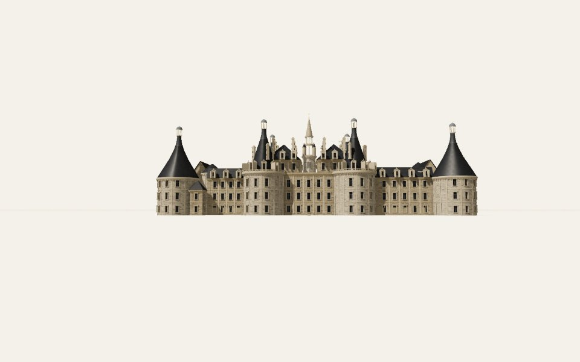
ref 1 · south-east · 139°, -6.5°
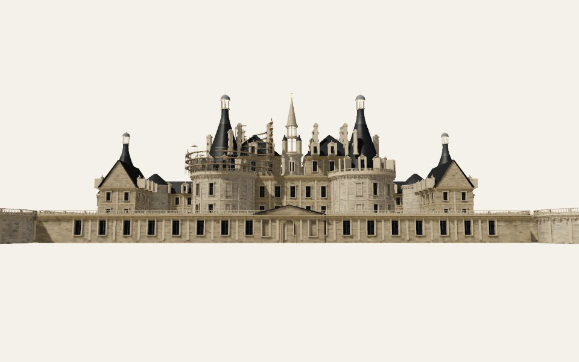
ref 2 · west tower · 192.4°, -14.4°
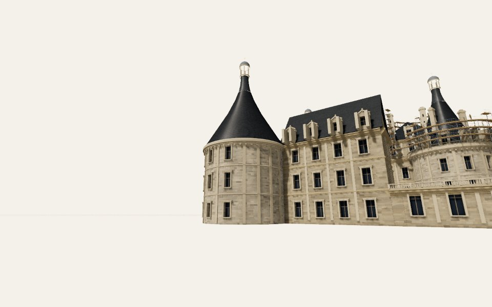
ref 3 · roofs, south-west · 224.4°, -17.6°
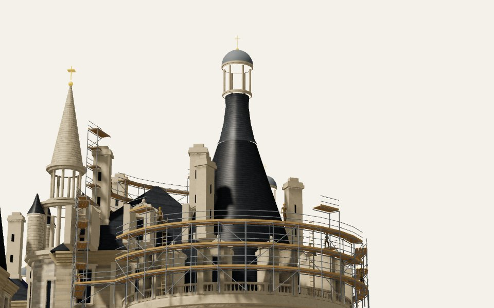
ref 4 · roofs, north-west · 284.1°, -11.1°
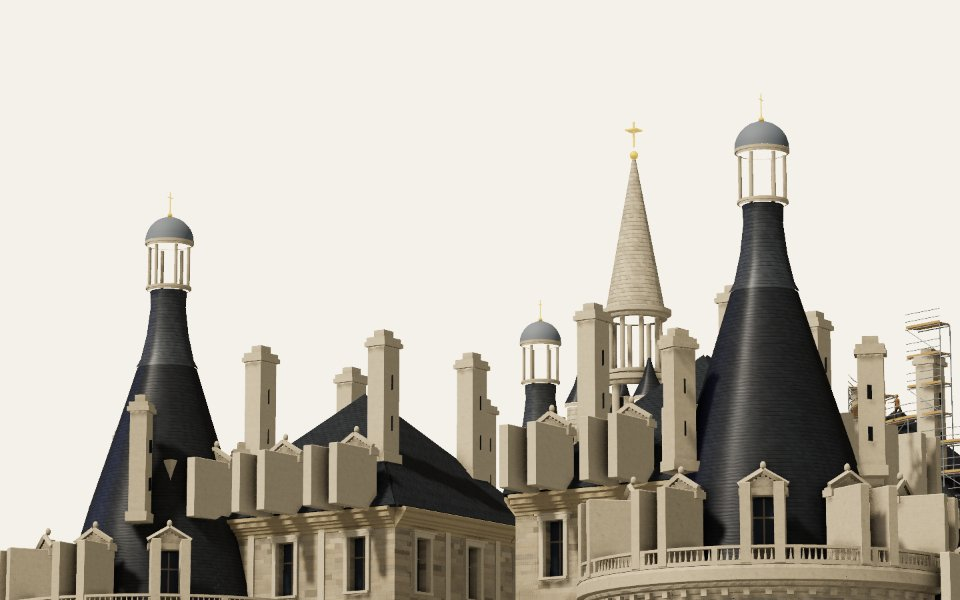
The end of every phase
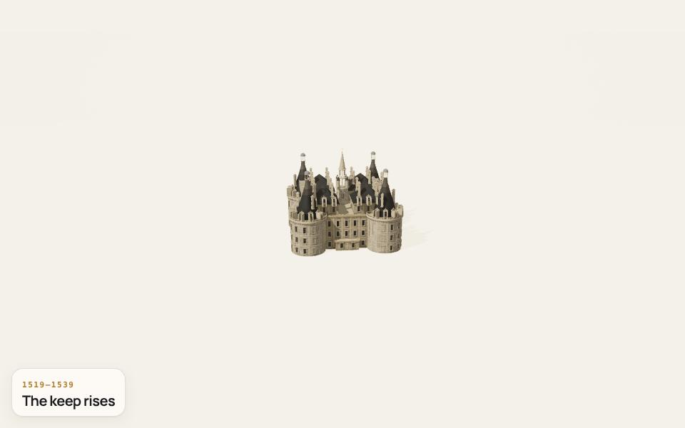
1519–1539 · The keep rises
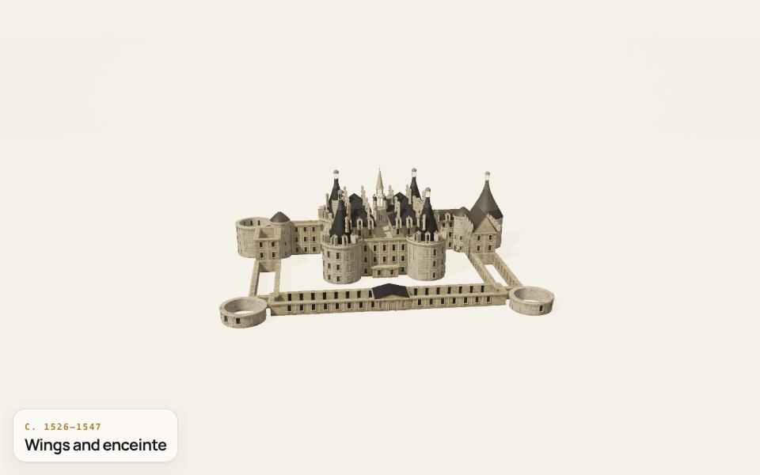
c. 1526–1547 · Wings and enceinte
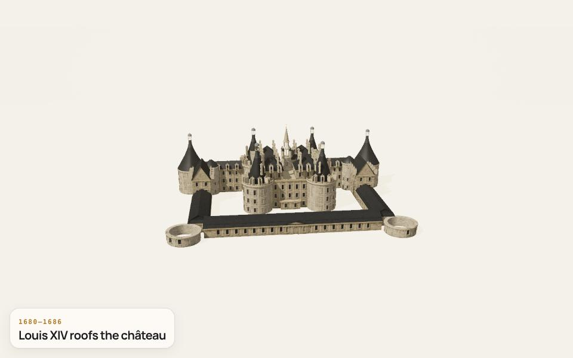
1680–1686 · Louis XIV roofs the château
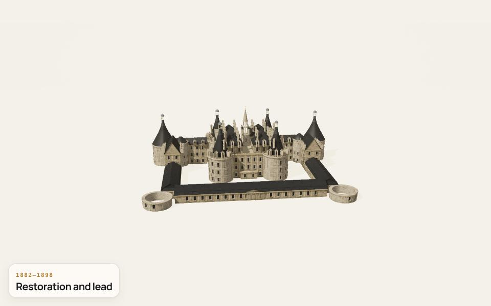
1882–1898 · Restoration and lead
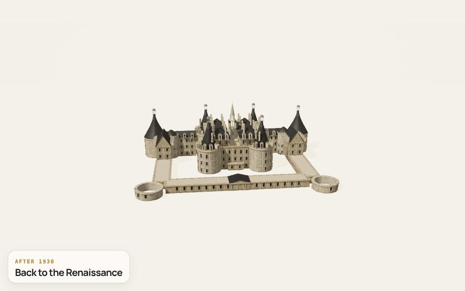
after 1930 · Back to the Renaissance
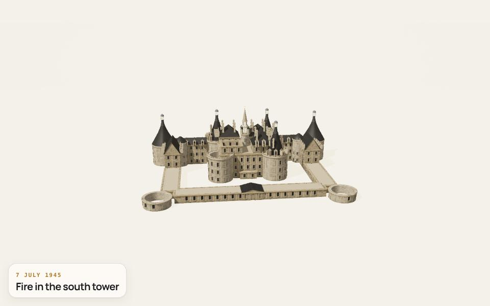
7 July 1945 · Fire in the south tower1950–1952 · Rebuilt without ornament